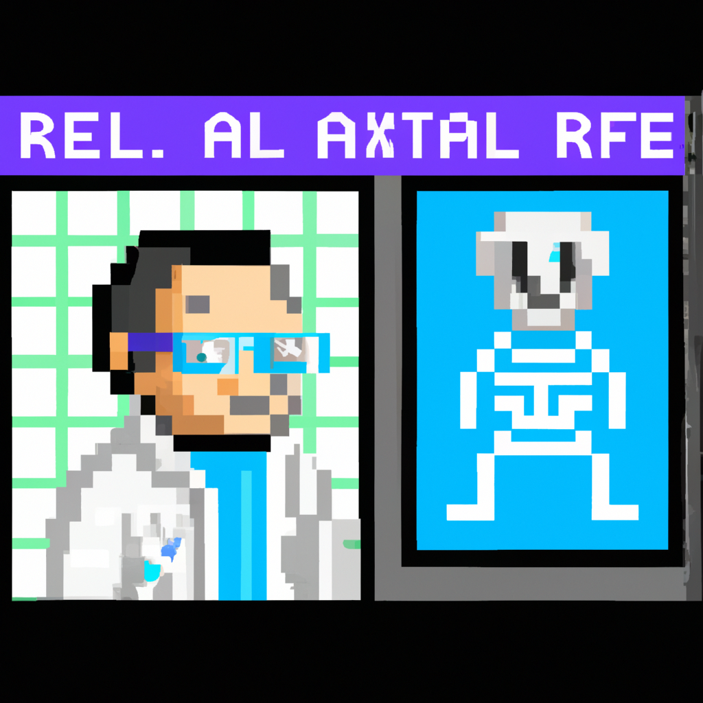

Why AI will never replace the radiologist
These days, there is a lot of talk about using artificial intelligence and machine learning in the field of radiology. AI can help with diagnosis and interpretation of medical images, and it can reduce the workload of radiologists.
However, there are several reasons why AI will never replace the radiologist. First, AI requires training data to be effective, and medical images vary significantly from patient to patient. AI can only be as good as the data it is trained on, and it is impossible to create a data set that covers all possible scenarios.
Second, AI lacks the human element that radiologists bring to the table. Radiologists have years of experience and a deep understanding of the underlying anatomy and physiology that help them make accurate diagnoses. AI can never match the expertise that radiologists possess.
Finally, AI is not infallible. AI systems are prone to errors and oversights that can have serious consequences. Radiologists are able to detect subtle nuances in medical images that AI cannot, and they can make judgement calls based on experience, rather than relying on algorithms.
In conclusion, AI can certainly help the radiologist in many ways. However, AI will never replace the radiologist. Radiologists bring an invaluable expertise and experience to the field that AI can never replicate.